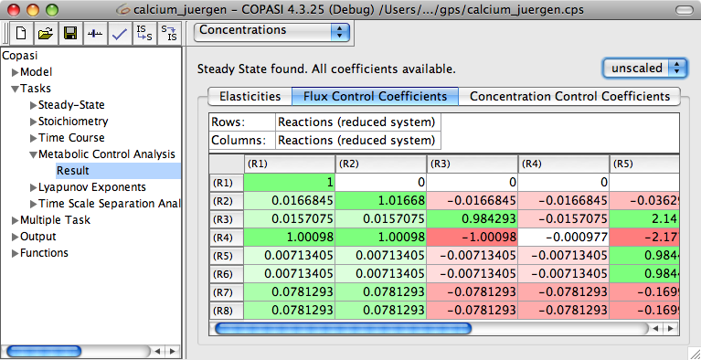
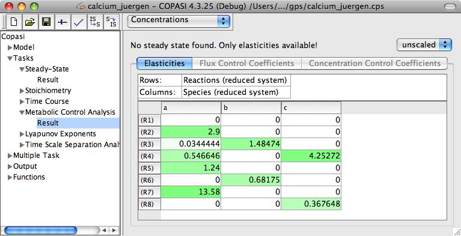

COPASI can also do a
Metabolic Control Analysis (MCA) for your model. The MCA task is located under Tasks->Metabolic Control Analysis.
In order to do a full MCA (elasticities and control coefficients), COPASI needs to look for a Steady-State first, otherwise COPASI can only calculate the elasticities. If you did not already do a Steady-State analysis and updated the model so that the system already is in the Steady-State, you should enable the check box that tells COPASI to do a Steady-State calculation before calculating the MCA. Depending on whether COPASI needs to do a Steady-State analysis or not, you can change one or more parameters that influence the way the MCA and the Steady-State are calculated. The parameters for the Steady-State calculation are explained in the
Steady-State analysis section.
To start the calculation, you click the Run button. After the calculation is finished, COPASI will automatically switch to the Result dialog. The dialog shows three tabs that contain the results of the
Elasticities,
Flux Control Coefficients and
Concentration Control Coefficients.
Depending on whether a steady state condition was found or not, only the
Elasticities tab might be enabled. COPASI will state the status of finding a steady state in a label right above the tabs. For all of the results, you can choose if you want COPASI to display them scaled or unscaled.
In order to have an output from the MCA, you have to create a report as described in the section or you decide to use the default report. The default report will output all matrices that are calculated as well as the Steady-State, if steady state calculation is requested. All that is left to do in order to write the output to a specific file is to connect output definition with a file. This can be achieved by clicking on the Report button. This opens a dialog that lets you connect the report of a specific task to a file on your hard disk. First we choose a report that is suitable for the MCA task from the drop down list at the top of the dialog. The default report for MCA is called
Metabolic Control Analysis. Next, we specify a file that will be used to store the report by clicking on the browse button and selecting the destination in the file dialog that opens. Per default, COPASI creates a new file or overwrites an existing file with the same name. Alternatively, you can tell COPASI to append the report to the end of an existing file by selecting the corresponding check box labeled Append at the bottom of the dialog. Once you are finished, you click on the Confirm button. If you now run the task, COPASI will write the output to the file you specified.
|  |
| MCA Results at Steady-State |
|  |
| MCA Results when no Steady-State was found |